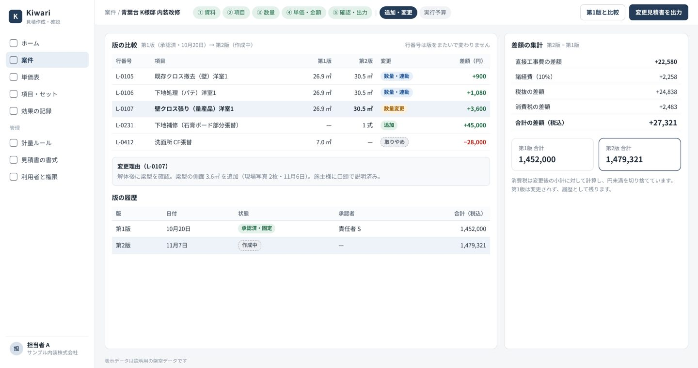
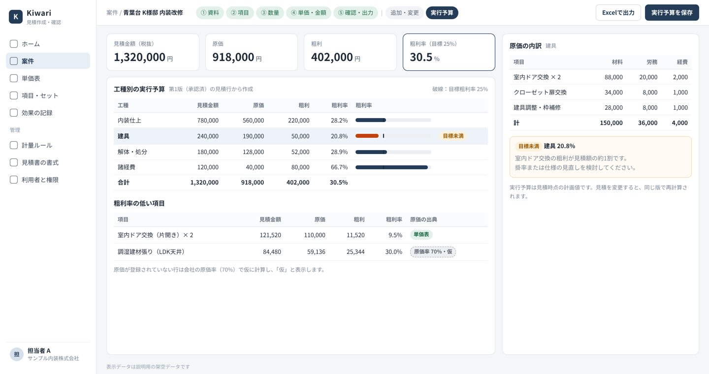

図面から見積、変更、実行予算まで。
ひとつのサービスで。
Kiwari（キワリ）は、内装・リフォーム会社のための、AIを組み込んだ業務クラウドです。AIが下書きし、担当者が確かめて確定します。
- 図面から見積
- 追加・変更見積
- 実行予算
- 貴社に合わせてカスタマイズ
見積の、こんな負担を減らします
拾い出しが夜までかかる
図面から数量を拾い、Excelへ打ち込む。
図面にない項目が漏れる
養生や処分は、思い出すしかない。
根拠がベテランの頭の中
変更や引継ぎのたびに、確認し直す。
AIツールと管理ソフトを、
別々に入れる必要はありません
Kiwari は、AIを組み込んだひとつの業務クラウドです。見積で入れたデータが、そのまま次の業務へつながります。
標準
標準
順次提供
順次提供
個別対応
個別対応
見積書が、そのまま作業画面です
Excelの内訳書と同じ並び。AIが入れた行は「仮」と表示され、確かめて確定します。




画面はイメージです。表示データは説明用の架空データです。
機能一覧
業務の流れに沿って機能をそろえています。貴社の業務に合わせた追加・変更にも対応します。
- 標準すべてのプランで利用できます
- 順次提供順次ご利用いただけます
- 個別対応貴社の業務に合わせて個別に構築します
案件・資料
標準- 案件ごとの資料管理
- 図面（PDF・画像）の読込と縮尺確認
- 現地調査の写真・メモ・録音の整理
- Excel拾い表・過去見積の取込
項目の拾い出し
標準- 自社の項目マスタと別名の照合
- 工事内容からのセット展開
- 漏れやすい項目の提示
- AIによる項目の提案
数量
標準- 図面上での長さ・面積・個数の計測
- 会社ごとの計量ルールと計算式
- AIによる数量の下書き
- 根拠の位置を図面に表示
単価・金額
標準- 自社単価表
- 定価×掛率・参考単価の候補
- 単価の出どころと有効期限の記録
- 諸経費・端数・消費税の計算
確認・承認・見積書
標準- 自動チェック
- 承認と版の固定
- 指定書式のExcel・PDF出力
- 前提条件・除外事項の添付
追加・変更見積
順次提供- 版の比較
- 増減の明細
- 変更見積書の出力
実行予算
順次提供- 見積行からの原価集計
- 工種別の原価と粗利
- 予算の確認と承認
発注・原価
個別対応- 発注書の作成
- 業者別の発注一覧
- 原価の実績入力と予算との対比
請求・入金
個別対応- 請求書の作成（インボイス対応）
- 入金の管理
- 業者への支払管理
顧客・営業
個別対応- 顧客情報の管理
- 案件の進捗と商談の履歴
- 見積の提出状況の一覧
工程・現場
個別対応- 工程表
- 写真台帳
- 現場日報
帳票・連携
個別対応- 元請別の見積書式
- 工事台帳などの社内帳票
- 会計ソフト等とのデータ連携（CSV）
管理
標準- 利用者と権限
- 操作履歴
- 修正の記録と自社ルールへの反映
- 作業時間と効果の記録
AIは候補を示す役割です。数量と金額の計算は設定したルールで行い、見積の確定は担当者と承認者が行います。
使い方
見積1件の流れです。どの段階からでも、手入力やExcelの取込で進められます。
資料を入れる
図面・写真・メモ・拾い表
下書きを作る
AIと過去の見積から
確かめて直す
根拠を図面で確認
承認する
版を固定
見積書を出す
自社の書式でExcel・PDF
貴社のやり方に、Kiwari を合わせます
標準の機能に加えて、業務の流れや帳票を貴社向けに作り込めます。内容と費用は個別にご相談します。
書式・帳票
元請別の見積書、社内の台帳や報告書。
業務の流れ
発注、請求・入金、工程など、見積の先の業務。
データの連携
今お使いのExcelや会計ソフトとのやり取り。
料金
月額の利用料と、導入時の初期費用で構成します。金額はすべて税別です。
ライト
- 見積 月10件まで
- 利用者 3名まで
- メールサポート
スタンダード
- 見積 月30件まで
- 利用者 10名まで
- 追加・変更見積、実行予算
- メール・オンラインサポート
プロ
- 見積 月80件まで
- 利用者 無制限
- 元請別の書式を複数登録
- 専任担当によるサポート
カスタム
- 業務の流れ・帳票を貴社向けに構築
- 発注、請求・入金、工程などの追加
- 既存のデータ・ソフトとの連携
- 内容をうかがってご提案します
| 初期導入費 | 300,000円〜（単価表・項目・見積書式の設定、過去見積の取込、操作研修を含みます） |
|---|---|
| 件数の超過 | 1件あたり 2,000円 |
| 契約期間 | 1年（以後、1年ごとの更新） |
導入から運用まで、担当者が支援します
導入設定
単価表、項目の呼び方、見積書の書式を設定します。
操作研修
実際の案件を使って、担当者・承認者に説明します。
運用サポート
質問や設定の変更を、メールとオンラインで受け付けます。
データの取り扱い
会社ごとに分けて保存し、AIの学習には使いません。
内装工事の会社が、つくっています
Kiwari は、内装工事を手がける福富建設が、自社の見積業務で使いながら開発しています。現場の言葉と、いつものExcelのかたちを大切にしています。
よくある質問
どんな工事に向いていますか。
内装仕上工事と住宅・店舗・事務所のリフォーム工事を対象にしています。対応する工事の種類は、導入時にご相談のうえ設定します。
AIが出した数量や金額は、そのまま使えますか。
そのままは使わず、担当者が確認する前提です。AIが入れた行には「仮」と表示し、根拠の位置と計算式を示します。図面の状態によっては下書きを作れない場合があり、その場合は図面上で計測して入力します。
今使っているExcelの見積書式は使えますか。
はい。導入時に自社や元請の書式を設定し、同じ形で出力できるようにします。
「個別対応」の機能は、どのように利用できますか。
貴社の業務をうかがったうえで、必要な範囲を個別に構築します。内容・費用・時期は、お打ち合わせのうえご提案します。
図面がなく、現地調査だけの案件でも使えますか。
使えます。写真・メモ・録音と過去の見積から下書きを作り、数量は手入力または簡易な計測で入力します。
データはどこに保存されますか。
国内のクラウド環境に保存します。保存期間と削除の方法は、契約時に取り決めます。
会社概要
| 会社名 | 福富建設株式会社 |
|---|---|
| 代表者 | 代表取締役 施 孝勇 |
| 所在地 | 〒110-0008 東京都台東区池之端一丁目1番1号 池之端ビル7階 |
| 設立 | 2022年6月 |
| 資本金 | 4,000万円 |
| 事業内容 | 内装工事業、建設業向けソフトウェアの提供 |
| サービス | Kiwari（内装・リフォーム会社向け 見積・実行予算クラウド） |
| 電話 | 03-3527-3561 |
| 連絡先 | info@kiwari-ai.jp |
お問い合わせ・資料請求
導入のご相談、デモのご希望、料金のお見積りは、メールでお気軽にご連絡ください。
会社名・ご担当者名・主な工事の種類をお書き添えください。